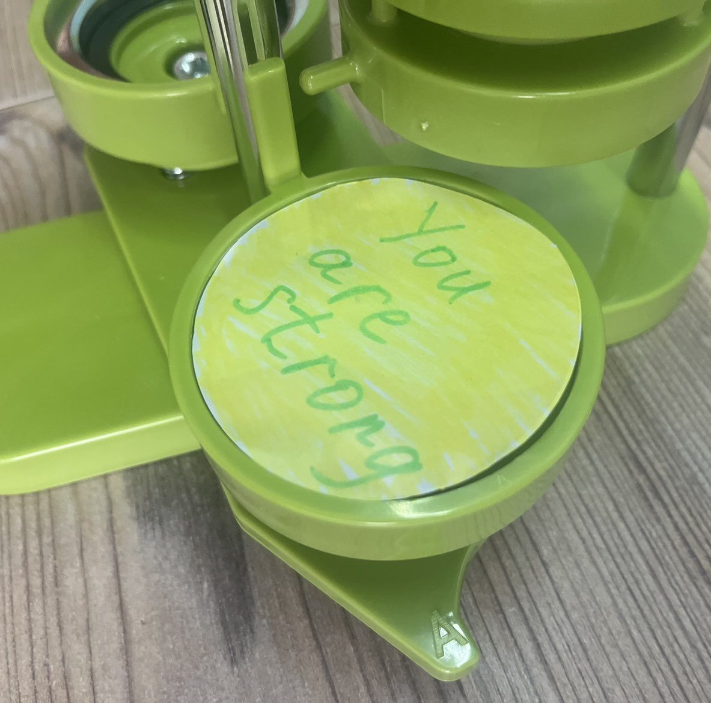

ウジホロドの避難施設に2週間滞在
東部から避難してきた家族と共にウクライナ西部ウジホロドの避難施設に延べ2週間滞在し、子供たちの精神的ケアや日本文化のレッスンを行いました。

ドニプロ・ハリコフの避難施設へ
ドニプロでは廃病院内の避難施設でけん玉など日本文化のレッスンを実施。ハリコフでは地下鉄内の避難施設で精神的ケアや歯科衛生のレッスン、病児への薬の配布を行いました。
避難地の子供たちと交流
ハルキウ・ドニプロなどの避難地を訪問。子供たちに絵の具で自分の夢を描いてもらうなど、心のケアにつながる交流を行いました。

奪還地へ越冬物資
ヘルソン、ムィコラーイウのウクライナ奪還地とドニプロを中心に、越冬物資と子供たちのための物資を届けました。

ウスミシュカ・ポイント設置とクリスマス
ドニプロにウスミシュカ・ポイントを設置し、戦下のクリスマスを過ごす子供たちに笑顔を届けました。健康増進のためのラジオ体操や歯磨き運動も継続的に実施。
ドニプロの避難施設支援
ドニプロを中心に避難施設への支援を行い、ウクライナ国営放送の取材を受け、活動が全土に放映されました。

戦禍の各地へ物品配布
ヘルソン、ザポリージャ近郊など戦禍を受けている各地を訪問し、物品配布などの支援を行いました。ルーツクでは当会主催の「わんぱく相撲ウクライナ大会」も開催。
被弾したキーウこども病院へ緊急支援
2024年7月に発生したキーウこども病院(オフマデット)への攻撃被害に対し、皆様からの寄付金と過去のプロジェクト残金を用いて緊急支援を行いました。

ウスミシュカ健康プロジェクト
遠方へ避難できない子供たちの多くは奥歯のほとんどが虫歯になっており、高額な治療費のため通院できません。歯科医と連携し、虫歯治療・口内ケア・歯ブラシ習慣の指導を行っています。

オフマデット小児科病院への定期訪問
キーウ最大の小児科病院オフマデットを定期的に訪問。手術を控えた子供たちと日本のお守り缶バッジを一緒に作るなど、入院中の子供たちの不安を希望に変える活動を続けています。